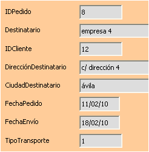

4.- Manipulación y edición de Bases de datos
|
Recepción. Flickrcc. Licencia CC. |
- Buenos días, Publi-Service, ¿dígame? - Buenos días. Soy cliente de su empresa, hice un pedido hace dos semanas y aún no me ha llegado, ¿podría informarme en que estado se encuentra? - Un momento, por favor. Le paso con el departamento de atención al cliente. |
|

Formulario de consulta |
- Atención al cliente, ¿en qué puedo ayudarle? - Buenos días, ya le he explicado a su compañera que soy cliente de la empresa. Hice un pedido hace dos semanas y aún no me ha llegado y quisiera saber por qué. - ¿Podría decirme el código de cliente y el número identificativo del pedido? - Si, aquí los tengo. Mi número de cliente es el 12 y el pedido es el número 8. - Un momento, por favor. |
Informe de pedidos |
- Sr. Pérez, tengo en pantalla el seguimiento de su pedido. Ya ha salido de nuestros almacenes y debería recibirlo en los tres próximos días. Le envío por e-mail nuestra hoja de seguimiento y una copia del pedido por si hubiera algún error. - Muchas gracias, veo que son una empresa eficiente y organizada. - Gracias a usted, no dude en llamarnos para cualquier otra consulta. |
Disponer de herramientas para almacenar de forma segura y ordenada la información no sirve de nada si no es posible obtener la información requerida en pasos sencillos y poder imprimirla después.
Para ello, los Sistemas de gestión de bases de datos y OOo Base en concreto, proporcionan herramientas utilisímas como las consultas, los formularios y los informes.